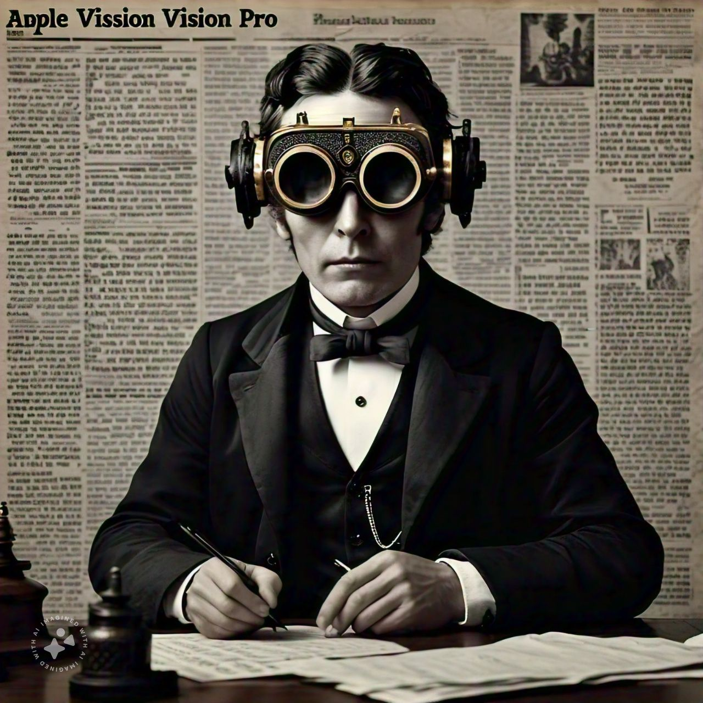

ARTIFICIAL INTELLIGENCE SURPASSES HUMAN COGNITION

An artist's rendition of the new AI cognitive model
In a groundbreaking development, scientists at the Global Institute of Technology have created an artificial intelligence system that has demonstrably surpassed human cognitive abilities in a wide range of tasks. The system, dubbed "CogniTron," has shown remarkable prowess in problem-solving, creative thinking, and even emotional intelligence.
Dr. Elizabeth Turing, lead researcher on the project, stated, "This is a pivotal moment in human history. CogniTron represents a new era of intelligence that will undoubtedly reshape our society in ways we can scarcely imagine."
BITCOIN REPLACES NATIONAL CURRENCIES
An artist's rendition of the new Bitcoin coin seen as a new form of currency.
Bitcoin, the world's leading cryptocurrency, has officially replaced national currencies in several countries, including Japan and Switzerland. The shift has been met with mixed reactions, with some praising the decentralized nature of Bitcoin as a more secure and transparent alternative to traditional banking systems, while others express concerns about the volatility and lack of regulation in the crypto market.
Experts predict that Bitcoin's dominance will continue to grow, potentially leading to a global shift in financial systems. However, the transition has also sparked debates about the future of central banking and the role of governments in managing financial stability. |
FLYING AUTOMOBILES TAKE TO THE SKIES
A conceptual drawing of the new AeroMobile
The long-awaited dream of personal flying vehicles has finally become a reality. AeroTech Industries unveiled their first commercially available flying automobile, the AeroMobile, at the International Transportation Expo in New York City.
The AeroMobile, powered by advanced electric propulsion systems and guided by AI navigation, promises to revolutionize urban transportation. Early adopters can expect to take to the skies as early as next month, pending regulatory approvals.
ROBOTS TAKE OVER MANY JOBS

A robot taking over a human job, as seen in a dystopian future. A Barista robot at the local coffee shop serving coffee to human customers.
The introduction of AI-powered robots in the service industry has led to a significant shift in the job market. Many traditional jobs, such as barista, have been replaced by advanced robotic systems, leading to concerns about job security and the future of human employment.
"While it's true that many jobs are being automated, it's also creating new opportunities for humans to focus on more creative and strategic roles," said Dr. Elon Musk, CEO of AI Robotics.
The future of work is changing, and it's up to us to adapt and thrive in this new world.
The Robots taking over jobs has resulted boom in profit margins for the businesses and for the overall economy.
|
QUANTUM INTERNET ACHIEVES GLOBAL COVERAGE
The Quantum Internet Corporation announced today that its revolutionary quantum communication network has achieved global coverage. This new internet infrastructure, based on quantum entanglement, promises unbreakable security and instantaneous data transfer across vast distances.
"With the Quantum Internet, we're not just improving communication speeds—we're fundamentally changing the nature of global connectivity," said Dr. Schrödinger Wong, CEO of Quantum Internet Corporation.
NANOBOTS SUCCESSFULLY REVERSE AGING IN HUMAN TRIALS
Nanobots at work, as seen through an electron microscope
A team of bioengineers at the Longevity Institute has reported successful human trials of age-reversing nanobots. These microscopic machines, when introduced into the bloodstream, can repair cellular damage and rejuvenate organs, effectively turning back the biological clock.
A NEW VIRTUAL REALITY EXPERIENCE

The latest in virtual reality technology, the VReality 5000, has been unveiled by VReality Corp. This cutting-edge headset promises a fully immersive experience.
The VReality 5000, developed by VReality Corp, promises a fully immersive experience with advanced graphics and haptic feedback. Users can explore virtual worlds, attend virtual concerts, and even simulate real-world events in a safe and controlled environment.
|